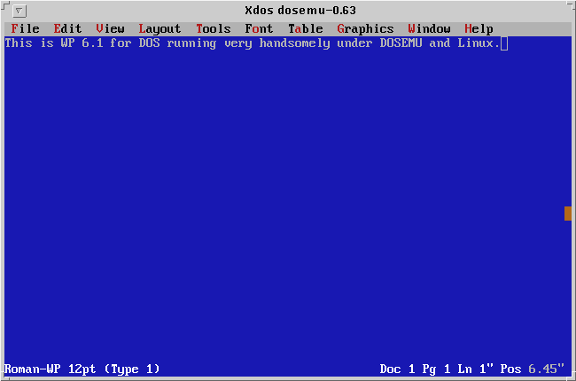

| You've made it to the weekend and things have finally slowed down. You crawl outa bed, bag the shave 'n shower 'cause it's Saturday, grab that much needed cup of caffeine (your favorite alkaloid), and shuffle down the hall to the den. It's time to fire up the Linux box, break out the trusty 'ol Snap-On's, pop the hood, jack 'er up, and do a bit of overhauling! |
 Howdy! Welcome to the Weekend Mechanic
Howdy! Welcome to the Weekend MechanicPhew! It's good to be back!
So how's everyone doing? How are things going? I had a great semester this past Fall -- got my 4.0 and everything :-) Still, things got rather hectic toward the end of classes and I'm still trying to get myself shoveled out from beneath a pile of backlogged email. I managed to survive six finals, the usual glut of "end-of-the-semester projects", a flight to Washington D.C. and a drive from there to N.Y. with my brother, his wife, and three small boys to visit our parents for Christmas, a new HD installation and complete system re-installation (the story of my life...), AND I actually managed to show my face at work once or twice before classes started again. If you're wondering why you haven't heard back from me, hang in there, I'm coming... :-)
And is it only me, or does it seem that the 'ol Linux Gazette has really taken on quite a nice face lift since Marjorie Richardson took the helm...? I have to admit, the LG looks GREAT -- new graphics, better organization, a search engine, and so forth. Having worked on the LG in the past I know how much time and effort goes into each issue and I know that Marjorie has worked hard on this. I know that a lot of folks have taken the time to drop a note (the Mail section is as busy as it always was... :-) but if you haven't, you really need to! Here, let me make it easy for all of you with mail-capable browsers...
See! that wasn't so bad, and the reality of it is that demonstrated interest and ongoing support are what keeps this 'ol ezine going in the first place! Remember: "The masses may vote with their feet, but hackers vote with both hands! (...unless you're able to type with your toes or are gifted with a prehensile tail or something... :-)"
Anyway, drop Marjorie a note, she'll really appreciate it.
I don't know about you, but one of the things that I really missed after doing the kernel 2.0 upgrade was being able to use supermount. For those of you who are unfamiliar with it, supermount is a program (in the form of a kernel patch) written by Stephen Tweedie that, in effect, allows you to insert, take out, and re-insert removable media such as floppies and CDs without going through all the rigmarole of using mount and umount. For those of us who are converts from the DOS era who are perpetually forgetting to umount a floppy before popping it out of the drive, this comes as blessed succor.
And the good news is: IT'S BACK!
Actually, it probably wasn't gone all that long, truth be known. I've been periodically checking in at the favorite sunsite.unc.edu mirror site and peeking around the /pub/linux/kernel/patches/ subdir for a newer version of supermount. No luck. Then recently, I saw a note posted by Stephen in response to someone's query that the program was available for the 2.0 kernels. To break the suspense, here's the URL:
There's a patch for kernel versions 2.0.0 and 2.0.23 and a README file that outlines the fairly simple steps to applying the patch, recompiling the kernel (and speaking of forgetting to do things, if you don't do a 'make zlilo' then DON'T FORGET TO RERUN LILO if you install the new kernel), and setting up the needed /etc/fstab entry to start using it. For those of you who've used supermount in the past, you'll be pleased to know that the installation and setup haven't changed since the kernel 1.2.13 version -- you should be able to use your old /etc/fstab (if it's still lying around somewhere) and have things come up working like they did in the Good Old Days!
Also, I wrote a short article on supermount several months ago for the LG and mentioned that I'd had a lot of trouble getting it to work correctly with the SoundBlaster 2X CD-ROM that I was using at the time. I was able to change CDs but the directory listing simply wasn't being updated correctly. Well, after the system upgrade this past Fall, I've switched to a Toshiba 8X CD and it works fine with this. Which reminds me...
If you want to use supermount with a CD-ROM, at least with the ATAPI type drive that I've got, then you'll likely want to make a small change to one of the kernel files to allow the CD-ROM drive door to be opened when the drive has been mounted. As most of you probably have noticed, once you mount the CD drive, the door is locked -- you have to umount the drive in order to open it and change CDs. Obviously, this doesn't work well if the point to using supermount is NOT having to do this type of this. So, to disable door locking, and PRESUMING YOU'RE USING AN ATAPI TYPE CD-ROM, then edit the file:
/usr/src/linux/drivers/block/ide-cd.c
Look for the following section which is near the beginning of the file:
/* Turning this on will disable the door-locking functionality. This is apparently needed for supermount. */ #ifndef NO_DOOR_LOCKING #define NO_DOOR_LOCKING 0 #endif
Change that '0' to a '1' after the NO_DOOR_LOCKING and you'll be all set. This, as the quick-witted will have already surmised, does what it implies: it disables door locking so you'll be able to change CDs. How about that for easy, eh?
So, to summarize what you'll need to do, here's the brief rundown:
$ cd /usr/src/linux $ cp "path-to-patch"/supermount-0.4c-for-2.0.diff . $ patch -s -p1 < supermount-0.4c-for-2.0.diff
Now, for the trusting (or merely lazy like myself... :-), here's a copy of the patches and the README file:
If you're the suspicious or just plain cautious type then go ahead and get the files from the URL above. Also, you might want to check there for updates or newer releases.
One thing that I've not really tried yet is seeing what happens if the CD-ROM drive is mounted via supermount and you attempt to play an audio CD. I've not had the nerve to try this. In this case, it's probably safe to go ahead and umount the drive, play the CD, and then mount the drive once again -- since there's an entry for the CD-ROM drive in /etc/fstab, all you should have to do is something like:
mount /cdrompresuming that /cdrom is where you normally mount your CD.
The other thing that I've not tried is using supermount with BOTH ext2 and MS-DOS type floppies. I suspect that it would cause a bit of trouble but, again, I've not been daring (or foolish...?) enough to try this little maneuver.
Anyway, I hope that give supermount a try! The README file is pretty helpful in terms of answering basic setup and usage questions and he includes a copy of his /etc/fstab file as an example. Hope you enjoy!
John
Nashville, TN
Mon Jan 20 10:26:51 CST 1997
I hesitate to even bring this up... :-)
One of the more common USENET postings in almost any of the linux groups these days is some newbee who innocently ventures a question such as "Is there a word processor for Linux like Word for Windows...". After the poor bloke gets flamed to a crisp with ardent admonitions to eschew such lollipop-ware and use a real text-processing system such as LaTeX or GROFF, there usually ensues a heated debate over the virtues of one's favorite system for getting something into print...
I think I'd like to avoid such debate... :-)
I would, however, like to humbly offer one possible solution to the need for a word processor under Linux -- especially if you're either unfamiliar with LaTeX or find that it doesn't completely meet your text-processing needs. And that is, using DOSEMU and one of the common word processors available for DOS. Now, if you already have a system working for you then by all means stick with it! However, if you still find yourself rebooting to DOS, OS/2, or Windows to do a bit of word processing then this might be one possible alternative.
But before I go on...
Let me quickly mention that I'm well aware that the usual business apps which have long been available for the other OS's -- the word processors, spreadsheets, desktop publishing packages, PIMs, and so forth -- are starting to appear as Linux-native applications! This is great news and I certainly welcome and support such efforts to bring these much-needed tools to the the Linux OS! Thing is, what I've tried so far really hasn't been helpful for me. To wit:
My other fairly minor complaint with it is the look of the output -- I've not been terribly impressed with the set of default fonts that come with it. Again, this is strictly a matter of taste, but the output hasn't been exactly what I'd hoped for..
Sorry, call me a heretic... :-)
I really don't want to get mired down in a review of all the possible word processor tools out there -- I mention these in order to say, "I've given them a a try..." Two other applications that really deserve to be mentioned include the Caldera's WordPerfect for Linux and the Applixware Suite available through Red Hat Software. I've not had a chance to try either of these out, although I've read a good deal of pro's and con's about each of them in the linux USENET hierarchy. A buddy at school just got a copy of the academic version of Applixware and I'm pretty interested in seeing this in action. So far, he's been pretty pleased with it, so I definitely need to stop by and give this a try!
Anyway, what I've found is working quite well for me is a combination of DOSEMU and WordPerfect 6.1 for DOS. If you happen to have an old (or new) copy of WP for DOS available to you, and you're willing to give DOSEMU a whirl, let me urge you to give this a try.
At this point, I'm going to do something I swore to myself I'd never do -- I'm going to weenie out on you a NOT go through the entire process of setting up DOSEMU. The reason for this is that, although I've gotten it up and running on my own box at home here, I really don't feel terribly comfortable with being able to walk anyone else through the process. I ended up tinkering around with it and, through an admittedly haphazard process of trial & (mostly) error, got the thing to work. There are still several things about it that I don't understand and so I won't inflict my ignorance upon you.
Still with me... :-)
Thing is, there's a very helpful little file that comes with DOSEMU called "QuickStart" that goes through the setup process step-by-step. If a Neanderthal like me can get this working, I'm confident that you can too!
What I would like to do is present a brief synopsis of my experiences with this in the hopes that it might be helpful to someone trying the same things. Again, let me emphasize that this represents strictly my own experiences. As the old saying goes, "your mileage may vary..."
After upgrading to kernel 2.0 I found it necessary to upgrade a number of packages, including DOSEMU. At the time, I picked up the most recent version which was dosemu-0.63.1.36. The configuration, compilation, and installation were as simple as:
$ ./configure $ make $ make installThis defaulted to including DPMI support, requiring the emumodule and syscallmgr modules to be loaded before being able to use DOSEMU. DPMI support allows you to try your hand at booting up Windows under DOSEMU. Over the past few months I've had mixed success at best in doing this. Also, since this is not currently supported by the DOSEMU folks, you're completely on your own if you want to venture into this! :-)
After compiling and installing the binaries, I used the QuickStart file as a guide and created the needed /etc/dosemu.conf and /etc/dosemu.users files. DOSEMU comes with a heavily commented configuration file -- dosemu.conf -- that let's you customize in a rational manner. For the curious, here's my current working version of dosemu.conf:
Let me make a couple comments about this before going on:
Be aware that if you do this, there's a chance that if DOSEMU crashes it will not correctly reset the keyboard and could potential require a cold boot (or a remote 'kbd_mode -a' to reset it). See the comments in the dosemu.conf file about this.
After doing all of this (in an incremental fashion) I found myself with a working version of DOSEMU and a functional WP program!
I also decided to load the emumodule and syscallmgr modules at boot time so that I could use DOSEMU more easily. To do so, you'll probably want to the use 'insmod' program that gets compiled with the rest of the DOSEMU files. The easy way to do this is to use the 'load_module.sh' script in the root DOSEMU directory. I found that by editing the first couple lines of the script I was able to call it from any directory: just add the correct path names at the top:
#!/bin/bash MODULESDIR=/usr/local/lib/dosemu-0.63.1.36/0.63.1.36/modules BINDIR=/usr/local/lib/dosemu-0.63.1.36/bin [...]and then add a stanza to /etc/rc.d/rc.local such as:
if [ -x /usr/local/lib/dosemu-0.63.1.36/load_module.sh ]; then echo "Loading DOSEMU 0.63 modules..." . /usr/local/lib/dosemu-0.63.1.36/load_module.sh fiThe modules use up very little memory and the convenience of not having to remember to load them is probably worthwhile.
There really isn't an awful lot of startling news here -- if you're used to installing DOS programs then this is pretty much a "no-brainer". The one important point to make, however, has to do with video driver installation. I discovered something quite valuable recently when I re-installed my system over Christmas Break.
The first time I set up WP 6.1 I installed only the S3 drivers (since I'm using an S3-based Diamond card). I found that doing so provided graphics mode support under DOS in resolutions up to 1280x1024. However, I was keenly disappointed to find that the best graphics-mode resolution I could get under DOSEMU was an abysmal 320x200. No matter how I poked, prodded, wheedled, cajoled, threatened, and messed with it, that's all I got.
Serious Bummer... :-(
Over Christmas, when I reinstalled the system, I noticed that one of the video drivers was labeled simply "VESA" and so, on a whim, installed that as well as the S3 drivers. This turned out to be quite fortuitous as although the S3 drivers still did not give better than 320x200 resolution, the VESA driver actually allowed me to get 1024x768 in 8-bit color. On a 17" monitor, this is a very comfortable resolution and provides pretty good WYSIWYG previewing.
So, the moral of the story is -- if you're in doubt, give the VESA video drivers a whirl.
Once I got DOSEMU installed and properly configured (BTW, I also created the /etc/dosemu.users file that simply has the word "all" as the sole word on the first line -- this let's anyone (i.e., me) to execute the program) and WP 6.1 installed, I was quite pleased to discover that nearly all the features available from running it under DOS were also available under DOSEMU:
A feature of WP that is completely UNAVAILABLE under DOS is that I can be editing a file in WP under DOSEMU and, using Ctrl-Alt-Fn, switch to another virtual terminal and continue to work under Linux. Running X Window concurrently also has shown no signs of causing problems.
Let me say this again since I get a chill just thinking about it...
I can run DOSEMU + WP 6.1 in a virtual terminal and have full editing and printing capabilities while at the same time freely switch to another VT or even to X Window and have all these processes running concurrently!!
This is what makes Linux such a seriously cool OS!!
This is way too cool... ;-)
The one caveat I'd mention is that of using WP in graphics mode. I don't know about WP 5.1, but version 6.1 supports a fairly respectable graphics-mode that provides WYSIWYG editing and print preview. On my system, the performance is quite acceptable, although not quite as responsive as under DOS (but then who'd want to run anything under DOS if they didn't really need to... :-) However, switching to a VT or to an X Window session while in graphics mode renders the system completely unusable -- the keyboard AND the console both go into impenetrable lockup which only a cold boot fixes. This has, at least, been my experience. However, I found that if I simply exited back to text mode before switching to another VT then everything worked fine.
Finally, let me make one last comment about using WP under DOSEMU. One of my ongoing complaints about many (though certainly not all) of the current "word processors" available for Linux is the quality of the printed output. The features that drew me to using WP were the familiarity with the program and the quality of the final output. WP 6.1 supports, among other things, TrueType fonts and having invested in a Corel Draw some time back (and its 750+ TT fonts) I was pretty keen to being able to continue to use these. I've been quite pleased that under Linux I can still do basic word processing in a known environment with predictable output. That was the clincher for me.
Again, let me quickly add that this might not be at all what you want or you might simply dislike the WP system itself. The thing about Linux is that it give you a choice once again!
And, for the skeptics out there, those who said, "it can't be done...", here's a screen shot of WP 6.1 running under X...

Give this a try! If you like it, keep it. If not, delete it and have a look at something else. Also, if you're looking for something to run under X then you might be well served to give either the Applixware suite or the Linux WordPerfect port a try. DOSEMU will run under X (as xdos) but WP loses some of its functionality -- mouse support and keystroke support can be a bit flaky and graphics-mode support is completely lost. So, if X is where you spend most of your time, you might consider investing in or investigating one of the native X programs.
Most of all, though...
Have Fun & Happy Linux'ing!
John
Nashville, TN
Mon Jan 20 13:18:01 CST 1997
Well, here's a little nothingburger that comes pretty close to being a bona fide FAQ -- the question arises from time to time as to how to (automatically) wallpaper one's X Window session after starting X. For the impatient, the short answer is:
xv -quit -root image.gifPresuming, of course, that the image that you wanted to use was in fact called "image.gif" the above would use the ubiquitous xv program by John Bradley to tile your root window with the specified window. The "-quit" option causes xv to do its work and then quietly terminate.
If you're using one of the 1.x versions of FVWM then just add a stanza such as the following:
Function "InitFunction" Exec "I" exec /usr/X11/bin/xv -quit -root /usr/gx/image.gif & [...] EndFunctionThat is, you simply add a stanza for xv to the "InitFunction" and this is done automatically!
Since I've not upgraded to the newer FVWM 2.x version (nor FVWM-95, or any of the other myriad new window managers) you're rather on your own with this one. However, I suspect that a quick perusal of the manual page or the configuration file should quickly point the way.
At the moment, I'm using olvwm 4 (with the 3.2 libraries) and added the following to the /var/openwin/lib/Xinitrc file:
#!/bin/sh # Xinitrc executed by openwin script to display startup logo # and restore desktop setup (saved using owplaces) # Hereby placed into public domain by Kenneth Osterberg 1993. [...] # Start programs exec /usr/X11/bin/xv -quit -root /var/openwin/lib/marbleFlowers.gif & exec /usr/local/X11/bin/xcalendar -geometry 240x240+0+160 & exec /usr/X11/bin/xclock -geometry 134x127+252+0 & exec /usr/local/X11/bin/rxvt -ls -font 9x15 -geometry 80x32+500+195 & exec /usr/local/X11/bin/rxvt -ls -font 9x15 -geometry 79x31+252+268 & exec /home/fiskjm/bin/syslogtk -geometry +398+0 & # Startup the OpenLook window manager if [ ! -z "$WINDOWMANAGER" ]; then exec $WINDOWMANAGER else exec $OPENWINHOME/bin/olwm fiThis has the identical effect of tiling the root window before olvwm is launched.
If you're interested in this, there are actually all sorts of nifty things that you can play with along this line. Keep in mind that xv has a plethora of options for setting the root window image interactively. To do so, simply find an image that you'd like to play with, launch xv with the image filename as the argument, and then select the "Root" button. I won't list all the possible options -- try them out and amuse yourself!
Thing is, to really have a good time you need to have a few images to play with and question is, where to get these little rascals...?
Well...
Here's a couple ideas to get you going:
There are all KINDS of great images out there that you can play with. FWIW, the GIMP home page has a fantastic marble tile image on its front page. It's wallpapering my desktop at this moment.
You might also do a quick Yahoo, Alta Vista, or WebCrawler search for any of the numerous Online Art Museums and Art Galleries. Or, for all you 60's Baby Boomers who grew up watching the Apollo flights and dreamt of being an astronaut, check out NASA's huge collection of space related images. If you're a Netscape user, simply click the right mouse button over the image and save it to disk. Keep in mind that some images do have copyright protection.
One of the other fun programs to play with is xfractint which generates fractal images. It will also SAVE those images in GIF format.
So let's do a quick walk through on this.
After I somewhat reluctantly installed Win95 this past Fall (I was taking a Visual Programming class and you can guess as to which Visual language we had to use...) I discovered a few new wallpaper images including one that I really liked -- the Forest.bmp image. I happen to enjoy hiking around in the nearby Great Smoky Mountains and grew up in the pine forests of upstate New York. Anyway, I decided that I'd gotten a bit tired of the 'ol SteelBlue background and was ready for a change. Here's what I did...
After mounting my Win95 partition and copying the c:\win95\Forest.bmp file to my home directory I used xv to have a look at this rascal and convert it to a GIF image. XV allows you to save an image as any number of different formats and I chose GIF, Full Color. That done, I had a suspicion that this might be a bit of a color resource hog -- a suspicion that was confirmed by another handy little program, xli.
Xli is a graphics manipulation program that is easily found at any of the sunsite mirrors in the X11 directory under the graphics viewers subdirectory. One of its handy features is the "identification" mode that it can run in. To get information about an image (from the command line) simply type in:
xli -ident image.gifand assuming that the image you were interested was, in fact, named "image.gif" then it would print out a useful one-liner. Doing this to the Forest.gif image that we just created using xv, we find:
$ xli -ident ~/Forest.gif /home/fiskjm/Forest.gif is a 256x256 GIF87a image with 256 colorsHmm... the size is OK, but with 256 colors this will definitely burn out my color map quicker than you can say Netscape! Now, enter the next useful program to our arsenal of image tools -- ImageMagick.
ImageMagick is one of those seriously cool, Must-Have programs if you're playing around with images very often. I recently found the latest version (nicely pre-compiled, thank you...) at the GA Tech sunsite mirror (ImageMagick-3.7.9-tgz) along with the needed libraries (libIMPlugin-1.0-tgz). Installing the precompiled bin's was a no-brainer and I was up and running in no time flat.
One of the programs that is included with ImageMagick (it's actually a suite of programs) is convert. convert allows you to quickly and easily convert images from one format to another and to optionally set its various attributes. You need to have a look at the manual page (which is included with the binaries) to really appreciate all the things this is capable of doing. For what I was trying to do, all I needed was to set the size of the color map to something a bit more sane.
Using the "-colors" option I was able to set the "preferred number of colors" to something that was a bit more X friendly:
convert -colors 32 ~/Forest.gif ~/forest.gifDoing this and running xli on it once again, we find that it has, in fact, been stripped down to a more lean 32 colors:
xli -ident ~/forest.gif ~/forest.gif is a 256x256 interlaced GIF89a image with 32 colorsThat's a bit better. Now I suppose that I could have used an even smaller number but 32 colors gave an image that differed visually from the original image very little.
Anyway, that was it! I now had a 256x256 image with 32 colors that no longer threatened to burn out my entire color map! I added a stanza to the Xinitrc file and voila!, instant wallpaper!
Keep in mind that this is hardly the only way to do this. There are several other nifty programs out there that provide similar functionality. Try scrounging around in the X11/graphics/ subdirectory of any of the sunsite mirrors or at ftp.x.org in its contrib subdirectory.
Another program that I'll mention before closing this up is the truly awesome xearth program. If you're looking for a truly impressive, animated X wallpaper program, look no further. This is one way too cool program! I don't have a screen shot of it to show you but believe me, it's worth setting it up and giving it a whirl! At the moment, you should be able to find it in the /X11/xapps/graphics/ subdirectory of any of the sunsite Linux mirrors. The file to look for is xearth-1.0.tgz.
Anyway, hope this gets you going! I admit that it's been a bit of a smorgasbord of suggestions, but you might be able to find something useful here! :-)
As usual, hope you enjoy!
John
Nashville, TN
Mon Jan 20 21:08:25 CST 1997
 Closing Up Shop...
Closing Up Shop...Well, as usual, things around here have been busier than I'd hoped and I just don't have the time to do all of the writing that I'd like to. Also, I'm trying to keep this page to a reasonable size :-) (those of you who've been hanging around here for a while might remember those 160K+ size pages...).
So what has everyone been up to? Found any new toys... :-)
Over Christmas, I finally started working on something that I'd been promising to do for ages: I've started to learn emacs! I have to say that this has been a bit of a paradigm shift after having used VIM for such a long time. However, I can see why the loyalties run so deep -- Emacs is a seriously cool and indisputably powerful editor. Truth is, however, that I've not taken the purist approach: I have to admit that I'm really using XEmacs. I also got my hands on an xemacs-derivative called infodock which is another way-too-cool and VERY powerful editor.
I'd hoped to write a bit on my initial experiences and impressions but I guess that will have to wait for another month or so. Thing is, there are actually quite a number of GREAT editors out there to mess around with. And the more that I try out different ones (I've decided that I really am an "editor junkie...") the more I'm convinced that the essence of the editor flame wars that periodically erupt can be summed up in preference.
Not to throw a wet blanket on anyone's jihad, but...
Although feature sets, user interfaces, resource utilization, performance issues, and so forth are very valid issues when discussing the various merits and liabilities of one's favorite editor, the bottom line is: you probably use it because you like it! I have to admit that after using VIM for the past couple years, emacs is something of an acquired taste. However, if you've been using emacs for a while, then vi looks a bit stark and your fingers feel bewildered.
Anyway, there's no accounting for taste and no apologies for it either. The great thing about Linux is that "it restores the choice once again!" Try everything out, use what is useful, keep what you like. And FWIW, those of you using a VI clone like myself might be interested in giving the latest iteration of VIM a test drive. As of a little bit ago, VIM 4.5 source was in the sunsite Incoming directory. It can now be compiled, using the Motif widget set, to have both a console-based and an honest-to-goodness X-based interface. The X version is called gvim (for "Graphical VIM") and I'm using it right now. It has all of the usual keystrokes (for all you ten-fingered typers...) but has nice mouse support for cursor positioning and cut-and-paste operations. It also sports a handsome scrollbar, handles multiple windows with aplomb, and even touts a rudimentary but useful menu bar. It has a very extensive online help system that is vaguely hypertext-like: you can navigate from one "node" to another using a keystroke similar to that with tags: Ctrl-] selects a node and Ctrl-t returns you to the original location.
With any luck, I'll have some time this next month and will try to put something together -- mostly just chat, nothing terribly profound. I've got a few screen dumps for the visually-oriented. Those of you who are considering taking the leap and learning emacs might well be served to have a look at this rascal. AND, keep in mind that it is NOT just an X Window app -- it'll run in console mode just as easily as under X. Have a look at the XEmacs home page for more info:
Well, I've got a bit of work to get one tonight and so I'll wrap this up for the month. I'm still trying to get out from underneath a pile of email. Hang in there... I'm coming!
Best Wishes and Happy Linux'ing!!
John M. Fisk
Nashville, TN
Monday, January 27, 1997
If you'd like, drop me a note at:
John M. Fisk <fiskjm@ctrvax.vanderbilt.edu>
Version Information:
$Id: wkndmech.html,v 1.2 2002/10/09 22:24:17 lg Exp $
Weekend Mechanic #1, November 1996
Weekend Mechanic #2, December 1996
![[ TABLE OF CONTENTS ]](../gx/indexnew.gif)
![[ FRONT PAGE ]](../gx/homenew.gif)